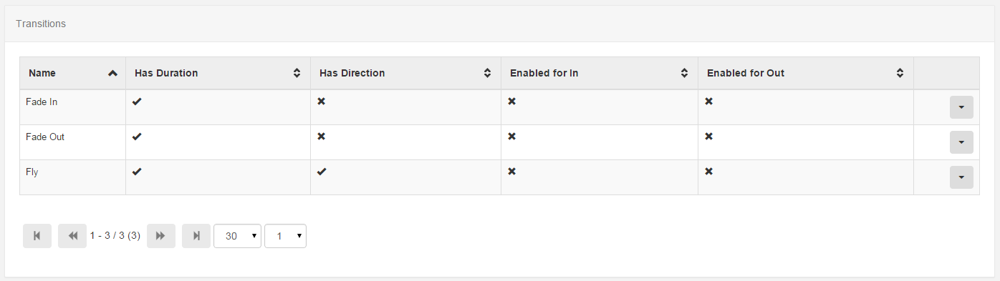

Transitions
Xibo supports basic transitions between Region Playlist items. These are supported in the Ubuntu and Android Display clients only.
Transitions are administered from the Transition Administration page - this area is used to determine which Transitions are available for assignment to Media Items.

-
Fade In
Increase Opacity from 0 to 100.
-
Fade Out
Decrease Opacity from 100 to 0.
-
Fly
Fly in or out on a compass point.
Playlist Transitions
Transitions between two media items on a Playlist are called "Playlist Transitions". They are used to transition between two media items and are set as "In" and "Out" transitions.
The Transition form adapts depending on the transition selected and the options available for that transition. In most cases it is necessary to select a duration for the transition in Milliseconds and in the case of Fly, a direction must also be selected.
Region Exit Transition
Region Exit Transitions happen when the last Media Item to be displayed in a Region is shown. This occurs only once all media items have expired in the other regions. This transition is set on the Region itself.